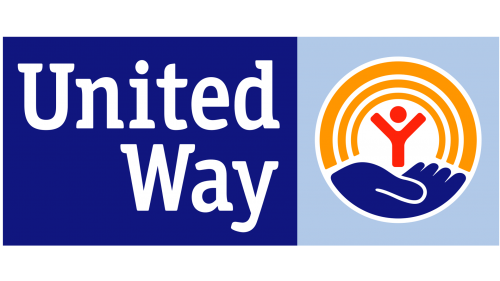

We define an 'equitable society' as a society in which we can no longer predict someone's outcomes (in terms of health, education attainment, the likelihood of incarceration, access to wealth, etc). based on their race, gender, disability status, or other social identifies that experience marginalization.
Our mission statement is asserting that through the actions of WCEL, we will move closer to a world in which the needs of children and families are met so that there are fewer disparities in those long-term outcomes.
WCEL takes an equity approach in our work by serving children and families based on needs. We provide services for kids with delays and/or disabilities so they can grow and thrive, instead of offering equal servies for every child.
Using the phrase 'equitable society' in the mission puts this existing framework front and center and invites us to consider how WCEL can work to ensure that kids and families, within the group we exist to serve, who are most vulnerable to harm are centered in our work.
"Our work with early intervention is essential to improvement in the long-term outcomes for children, their families, and our community. I am committed to working with all of our partners and staff to ensure that all children get the support that they need.”
-Sierra James, Executive Director

We proudly partner with United Way of Whatcom County
